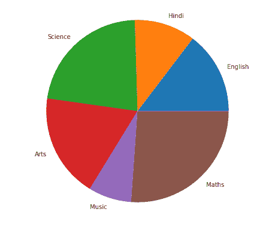
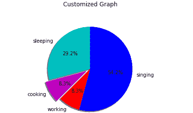

Matplotlib 饼图——pie()函数
原文：https://www.studytonight.com/matplotlib/matplotlib-pie-chart-pie-function
在本教程中，我们将介绍什么是饼图？以及如何使用 python matplotlib 库创建饼图来表示您的数据。
什么是饼图？
饼图基本上是一种特殊的图表，用于在饼图切片的帮助下显示数据的相对大小。因此，它是一个完整的圆来表示 100%的空间，并创建饼图切片来表示数据集。
用于显示的是一个圆形统计图，只有一系列数据。
饼图的完整区域等于给定数据的总百分比。
在饼图中，饼图切片的区域用于表示数据部分的百分比。
馅饼的切片通常被称为楔形。
楔形的面积主要表示该部分相对于整个数据的百分比，可以通过楔形的弧长来计算。
饼图的用途:
下面给出了几个用途:
业务演示(如销售、调查结果和运营)
提供快速摘要
Matplotlib pie()函数
matplotlib 的 pyplot 模块中的pie()函数用于创建一个饼图，表示数组中的数据。
如果图形和轴是正方形的，或者轴的纵横比相等，则可以创建最佳的饼图。
pie()函数所需的语法如下所示:
matplotlib.pyplot.pie(data, explode, labels, colors, autopct, shadow)
pie()功能参数:
让我们讨论一下这个函数的参数:
1。数据
该参数用于表示由要绘制的数据值组成的数组，每个切片的分数面积由数据/和(数据)表示。如果和(数据)< 1 ，那么数据值直接返回分数区域，这样生成的饼图将有一个大小= 1-和(数据)的空楔形。
2。标签
该参数表示字符串序列的列表，用于设置每个楔形的标签
3 .尸检
该参数为字符串形式，用于用数值标记楔形体
4。颜色
该参数用于为楔形体提供颜色。
5。阴影
这个参数是用来创建楔形的阴影。
现在，是时候重温一下这个概念，创建一些饼图了。让我们从一些例子开始。
简单饼图示例:
在下面给出的例子中，我们将在 matplotlib 中创建一个简单的饼图:
import matplotlib.pyplot as plt
import numpy as np
subjects = ['English', 'Hindi', 'Science', 'Arts', 'Music', 'Maths']
data = [23, 17, 35, 29, 12, 41]
fig = plt.figure(figsize =(10, 7))
plt.pie(data, labels = subjects)
plt.show()
上述代码片段的输出如下所示:

现在是时候创建一些定制的饼图了。以下是自定义图的一些方面:
startangle参数用于在饼图的 x 轴上按逆时针方向将绘图旋转指定的度数。shadow参数接受一个布尔值，如果是真，那么的阴影会出现在馅饼的边缘下方。自定义饼图的楔形区使用
wedgeprop以 Python 字典为参数，名称值对用于表示楔形区属性，如线宽、边缘颜色等。通过设置
frame=True坐标轴，在饼图周围绘制框架。autopct参数主要控制如何在上显示百分比。
自定义饼图示例:
让我们在 matplotlib 中创建一个自定义饼图:
import matplotlib.pyplot as plt
slices = [7,2,2,13]
activities = ['sleeping','cooking','working','singing']
cols = ['c','m','r','b']
plt.pie(slices,
labels=activities,
colors=cols,
startangle=90,
shadow= True,
explode=(0,0.1,0,0),
autopct='%1.1f%%')
plt.title('Customized Graph\n')
plt.show()
其输出如下所示:

嵌套饼图示例:
现在让我们创建一个嵌套饼图(也称为圆环图)，下面给出了它的实例: